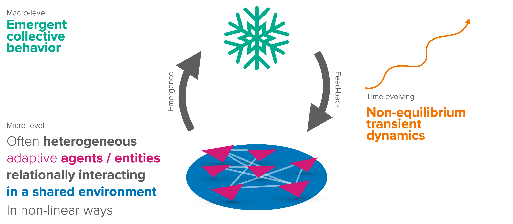

import numpy as np
import matplotlib.pyplot as plt
import matplotlib.style as style; style.use('seaborn-v0_8')
plt.rcParams['figure.figsize'] = (7.8, 2.5); plt.rcParams['figure.dpi'] = 300
plt.rcParams['axes.facecolor'] = 'white'; plt.rcParams['grid.color'] = 'gray';
plt.rcParams['grid.linewidth'] = 0.25; 9 Behavioral agency
▶ Complex Systems Modeling of Human-Environment Interactions
>> Open the latest version on the web, Github or in GoogleColab <<
Wolfram Barfuss | University of Bonn | 2025/2026
9.1 Motivation | Agent-based modeling of complex systems
The distinctive feature of the science of complex systems is the fascination that arises when the whole becomes greater than the sum of its parts (Figure 9.1) and properties on the macro-level emerge that do not exist on the micro-level.

Complex systems thinking is instrumental in understanding the interactions between society and nature (Figure 9.2).
Agent-based models capture the features of a complex system in the most direct way, in that they model the behavior of individual agents and their interactions.
Learning goals
After this lecture, students will be able to:
- Explain the history and rationale of agent-based modeling and generative social science
- Explain the advantages and challenges of agent-based modeling
- Simulate one famous agent-based model in Python
- Write object-oriented Python programs
9.3 Example | Conway’s Game of Life
The Game of Life is a cellular automaton devised by the British mathematician John Horton Conway in 1970.
A cellular automaton is a discrete model of computation consisting of a regular grid of cells, each in one of a finite number of states (e.g., on and off).
The game of life is a very influential model in the field of complex systems (although Conway wasn’t particularly proud of it)
Questions
The game of life is a comparably simple model to answer two very fundamental questions:
- How can something reproduce itself?
- How can a complex structure (like the mind) emerge from a basic set of rules?
States
The cells of the cellular automaton can be in one of two states: dead or alive.
We can represent the state of a cell with a binary variable: 1 (black) for alive and 0 (white) for dead. The state of the whole system can the be represented as follows:
ROWS, COLS = 20, 50 # define the size of the grid
grid = np.random.choice([0, 1], size=(ROWS, COLS), p=[0.7, 0.3]) #generate random states
plt.imshow(grid, cmap='binary', interpolation='none') # plot the grid
plt.gca().set_xticks([]); plt.gca().set_yticks([]); # remove x and y ticks
Dynamics
The dynamics of the game of life are governed by the following rules:
- Living cells with fewer than two living neighbors die
- Living cells with more than three living neighbors die
- Dead cells with exactly three neighbors become alive
Emerging structures
Despite the simplicity of the rules, complex structures of species moving and reproducing can emerge from these rules, despite them not having any concept of movement or reproduction.
See, for example, the Epic Conway’s Game of Life or Life in life videos.
Impact
Although the rules are incredibly simple, it is impossible to say whether a given configuration persists or eventually dies out. There are fundamental limits to prediction.
It was shown that you can do any form of computation (that you can do on a regular computer) with the game of life.
Complex behavior does not require complicated rules. Complex behavior can emerge from simple rules. This realization has been a key insight of complexity sciences and has shaped the way complexity science is done today.
See Inventing Game of Life (John Conway) on Numberphile for a brief backstory on the game of life.
9.4 Example | Schelling’s segregation model
The second example model studies the phenomenon of racially segregated neighborhoods. The content here is heavily inspired by QuantEcon’s Quantitative Economics with Python.
Question
We observe racially segregated neighborhoods.
Does that mean that all residents are racists?
Context
In 1969, Thomas C. Schelling developed a simple but striking model of racial segregation.
His model studies the dynamics of racially mixed neighborhoods.
Like much of Schelling’s work, the model shows how local interactions can lead to surprising aggregate structure.
In particular, it shows that relatively mild preference for neighbors of similar race can lead in aggregate to the collapse of mixed neighborhoods, and high levels of segregation.
In recognition of this and other research, Schelling was awarded the 2005 Nobel Prize in Economic Sciences (joint with Robert Aumann).
The Model
We will cover a variation of Schelling’s model that is easy to program and captures the main idea.
Set-Up
Suppose we have two types of people: orange people and green people.
For the purpose of this lecture, we will assume there are 250 of each type.
These agents all live on a single-unit square.
The location of an agent is just a point \((x, y)\), where \(0 < x, y < 1\).
Preferences
We will say that an agent is happy if half or more of her 10 nearest neighbors are of the same type.
Here ‘nearest’ is in terms of Euclidean distance.
An agent who is not happy is called unhappy.
An important point here is that agents are not averse to living in mixed areas.
They are perfectly happy if half their neighbors are of the other color.
Behavior
Initially, agents are mixed together (integrated).
In particular, the initial location of each agent is an independent draw from a bivariate uniform distribution on \(S = (0, 1)^2\).
Now, cycling through the set of all agents, each agent is now given the chance to stay or move.
We assume that each agent will stay put if they are happy and move if unhappy.
The algorithm for moving is as follows
- Draw a random location in \(S\)
- If happy at the new location, move there
- Else, go to step 1
In this way, we cycle continuously through the agents, moving as required.
We continue to cycle until no one wishes to move.
Implementation
We use object-oriented programming (OOP) to model agents as objects.
OOP is a programming paradigm based on the concept of objects, which can contain data and code: - data in the form of fields (often known as attributes or properties), and - code in the form of procedures (often known as methods).
Agent class
A class defines how an object will work. Typically, the class will define several methods that operate on instances of the class. A key method is the __init__ method, which is called when an object is created.
class Agent:
# The init method is called when the object is created.
def __init__(self, type, num_neighbors, require_same_type):
self.type = type
self.draw_location()
self.num_neighbors = num_neighbors
self.require_same_type = require_same_type
def draw_location(self):
self.location = np.random.uniform(0, 1), np.random.uniform(0, 1)
def get_distance(self, other):
"Computes the Euclidean distance between self and another agent."
a = (self.location[0] - other.location[0])**2
b = (self.location[1] - other.location[1])**2
return np.sqrt(a + b)
def number_same_type(self, agents):
"Number of neighbors of same type."
distances = []
# distances is a list of pairs (d, agent), where d is the distance from
# agent to self
for agent in agents:
if self != agent:
distance = self.get_distance(agent)
distances.append((distance, agent))
# == Sort from smallest to largest, according to distance == #
distances.sort()
# == Extract the neighboring agents == #
neighbors = [agent for d, agent in distances[:self.num_neighbors]]
# == Count how many neighbors have the same type as self == #
return sum(self.type == agent.type for agent in neighbors)
def happy(self, agents):
"True if a sufficient number of nearest neighbors are of the same type."
num_same_type = self.number_same_type(agents)
return num_same_type >= self.require_same_type
def update(self, agents):
"If not happy, then randomly choose new locations until happy."
while not self.happy(agents):
self.draw_location()Testing the agent class:
np.random.seed(1)A = Agent(0, num_neighbors=4, require_same_type=2)
type(A)__main__.AgentA.location(0.417022004702574, 0.7203244934421581)Creating a list of agents:
agents = [Agent(0, 4, 2) for i in range(100)]
agents.extend(Agent(1, 4, 2) for i in range(100))
len(agents)200Is agent three happy?
a3 = agents[3]
a3.happy(agents), a3.location(False, (0.39676747423066994, 0.538816734003357))Let’s let agent three update its position:
a3.update(agents)agents[3].happy(agents), agents[3].location(True, (0.03232306662357398, 0.7093872512312951))Observation function
We implement a function to plot the distribution of agents.
def plot_distribution(agents, cycle_num, ax=None):
"Plot the distribution of agents after cycle_num rounds of the loop."
x_values_0, y_values_0 = [], []
x_values_1, y_values_1 = [], []
# == Obtain locations of each type == #
for agent in agents:
x, y = agent.location
if agent.type == 0:
x_values_0.append(x)
y_values_0.append(y)
else:
x_values_1.append(x)
y_values_1.append(y)
if ax is None: fig, ax = plt.subplots(figsize=(4, 4))
plot_args = {'markersize': 4, 'alpha': 0.6}
# ax.set_facecolor('azure')
ax.plot(x_values_0, y_values_0, 'o', markerfacecolor='orange', **plot_args)
ax.plot(x_values_1, y_values_1, 'o', markerfacecolor='green', **plot_args)
ax.set_xticks([]); ax.set_yticks([])
ax.set_title(f'Cycle {cycle_num}')Testing the observation function,
num_of_type_0 = 250
num_of_type_1 = 250
num_neighbors = 10 # Number of agents regarded as neighbors
require_same_type = 5 # Want at least this many neighbors to be same type
# == Create a list of agents == #
agents = [Agent(0, num_neighbors, require_same_type) for i in range(num_of_type_0)]
agents.extend(Agent(1, num_neighbors, require_same_type) for i in range(num_of_type_1))
plot_distribution(agents, 0)
Simulation run
np.random.seed(10) # For reproducible random numbers
# == Main == #
num_of_type_0 = 250
num_of_type_1 = 250
num_neighbors = 10 # Number of agents regarded as neighbors
require_same_type = 5 # Want at least this many neighbors to be same type
# == Create a list of agents == #
agents = [Agent(0, num_neighbors, require_same_type) for i in range(num_of_type_0)]
agents.extend(Agent(1, num_neighbors, require_same_type) for i in range(num_of_type_1))
count = 1
# == Loop until none wishes to move == #
fig, axs = plt.subplots(2,3, figsize=(13, 6))
axs.flatten()
while True:
print('Entering loop ', count)
plot_distribution(agents, count, axs.flatten()[count-1])
count += 1
# Update and check whether everyone is happy
no_one_moved = True
for agent in agents:
old_location = agent.location
agent.update(agents)
if agent.location != old_location:
no_one_moved = False
if no_one_moved:
break
print('Converged, terminating.')
plt.tight_layout()Entering loop 1
Entering loop 2
Entering loop 3
Entering loop 4
Entering loop 5
Entering loop 6
Converged, terminating.
In this instance, the program terminated after 6 cycles through the set of agents, indicating that all agents had reached a state of happiness.
Interpretation
What is striking about the pictures is how rapidly racial integration breaks down.
This is despite the fact that people in the model don’t actually mind living mixed with the other type.
Even with these preferences, the outcome is a high degree of segregation.
9.5 Challenges of agent-based modeling
- Performance Limitations. The execution speed of ABMs can be slow, which can be a limitation for extensive simulations.
- Transparency and Reproducibility. Providing a clear and accessible description is challenging due to model complexity.
- Data Parameters and Validation. Getting empirical data and validating models that may simulate unobservable associations is challenging.
- Arbitrariness and Parameterization. The many parameters that need to be set can lead to a high degree of arbitrariness.
- Behavior modeling. There are endless possibilities to design plausible behavioral rules. A sensitivity analysis is difficult.
Up next
- Reinforcement learning as a principled model for behavior to counter some arbitrariness in parameterization behavioral rules.
- Synthesis: Collective reinforcement learning dynamics to counter performance limitations and a lack of transparency and reproducibility.
9.6 Learning goals revisited
In this chapter,
- we covered the history and rationale of agent-based modeling: generative social science.
- We discussed the famous Conway’s Game of Life model.
- We covered the advantages (flexibility and expressiveness) and challenges (transparency, arbitrariness, performance) of agent-based modeling
- We implemented and simulated the famous Schelling’s segregation model as an object-oriented program.
The exercises for this lecture will explore how the model’s outcome depends on its parameters. It will investigate what it takes to achieve a well-mixed society.